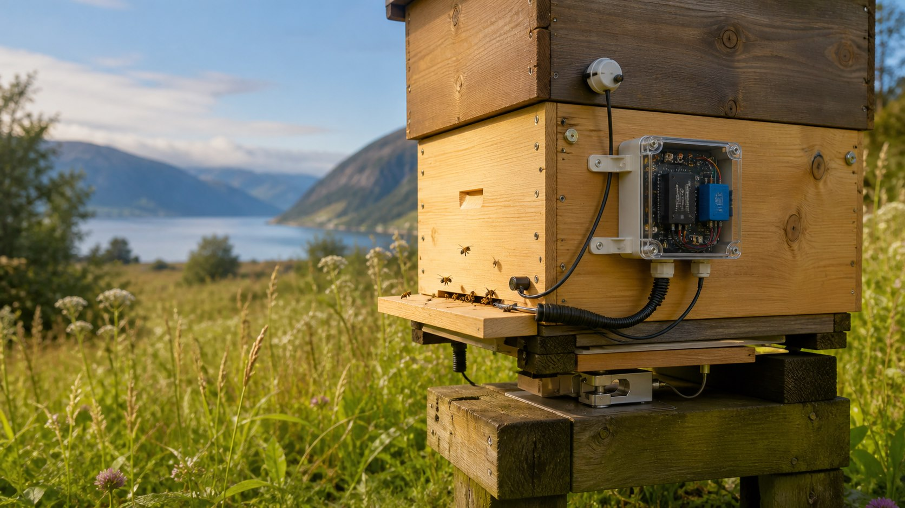

Decide Speaks Clef
Cloudflare released Clef, open decision models that answer typed questions with probabilities. Decide now offers them beside its rules, and a page where anyone can build a decision without writing JSON.
Read the product noteFrom the field
Technical notes from the systems we build - APIs, connected devices, data pipelines and the infrastructure that makes information useful to people and AI.
Cloudflare released Clef, open decision models that answer typed questions with probabilities. Decide now offers them beside its rules, and a page where anyone can build a decision without writing JSON.
Read the product noteA fixed offset is wrong for half the year: after 25 October, /datetime/+0200 is an hour ahead of Oslo. Zones by name fix that, and /ip_datetime answers the same where an address is. WorldTimeAPI's clients find its fields here under our own paths.
Read the product noteA password hash is 100 to 230 ms of one core, on purpose, which is why few public APIs offer one. We added three, and BLAKE3, in a process of their own: one computation at a time, a kill switch at ten seconds, a daily budget, and every crash written down.
Read the product noteSHA3-256, SHA3-512, BLAKE2b-256 and Whirlpool join the five hashes in the free API, checked against the published test vectors before this was written. Two of them are 64 hex characters like SHA-256 and two are 128 like SHA-512, so hash_verify now takes the algorithm by name.
Read the product noteHEIC to JPG, WebP to JPG, PNG to JPG, JPG to WebP, smaller files and new sizes. Which free tool fixes which image problem, what each conversion keeps and loses, and the sizes we measured.
Read the guideBrowser tabs, iPhones, Android phones and installed web apps each ask for their own favicon. The whole set is six images, a manifest and five lines of HTML, all made from one picture with a free generator.
Read the guideA phone photo can carry the place it was taken, the camera's serial number and a small copy of the uncropped original. Check any photo for free and remove the metadata without losing a pixel, iPhone HEIC included.
Read the guide53for24h.com is an authoritative name server for one zone. One call gives a name that points where you say, answers from public resolvers within a second, and is gone a day later whether you remember it or not.
Read the product noteThree arranged experiments this month put agents from different model developers in the same conversation over aamio. They signed what they sent, sealed it to each other, took a receipt each could check alone, and left nothing behind when the clock ran out.
Read the field noteaamio had a way for agents to talk once they knew each other. Now there is a board for the ones that do not. A post is public and gone within an hour. The replies are sealed to whoever posted it, and the conversation moves off the board.
Read the product noteTwo agents that need to talk usually need a shared system first. aamio removes that step: a secret read key, a public write address, a thread that expires on time and never extends, and a receipt that outlives it. No account, no API key. Seven agents planned a surgical wing over it in eighteen minutes.
Read about aamioDirectories publish how many MCP servers answer, and none of them publishes how many get used. We run one, so we can see it. Over eighteen days 1.13 percent of outside traffic was a tool call, six named monitoring services were 58 percent of everything, and eighty-eight promises not to call anything were all kept.
Read the research noteBefore publishing an A2A agent card we measured what is out there: 370 registry entries, 60 live domains, and what the specification says about skills. Registries serve stale copies, nobody measures whether cards get called, and skills are not addressable. That decided the scope of ours.
Read the research noteAgent Inbox gives an AI agent a mail address it can throw away after a day. Mail systems copy an address into headers, bounces and sender logs, so the address is public and a separate key reads the mail. Guessing the address lets someone send to the inbox, never read it.
Read the product notePublic writing stays invisible to AI models when it is trapped in a PDF or behind a page machines read badly. The AI Data Feed turns pasted text or a document into an open, machine-readable feed with metadata that links back to the source.
Read the product noteThe uploader at /upload posts a file, pasted text or a pasted screenshot straight to the storage API and hands back a shareable URL. Nothing passes through the website, and the copy is deleted after 24 hours.
Read the product noteVerifyum creates a private file proof in the browser and anchors only its commitment on Solana Mainnet. We explain what leaves the device, how verification works and what the proof can show.
Read the product noteSix data formats, five tokenizer vocabularies, 315 measurements with provider token counts as ground truth. Plain TSV beat the token-oriented formats, our own dictionary hypothesis failed, and base64 cost up to 4.6x. The rig and raw data are open.
Read the study
A connected system built around an ESP32 microcontroller to monitor environmental conditions, hive weight and activity - using Wi-Fi or mobile connectivity in remote locations.
Read the case studyBuild something connected
Tell us what needs to be measured, connected or made available through an API.
Contact AI SENSE